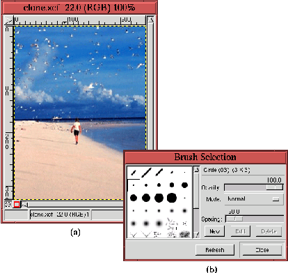
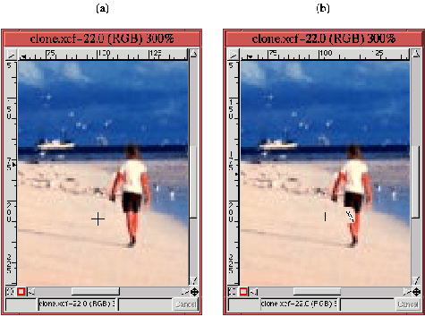
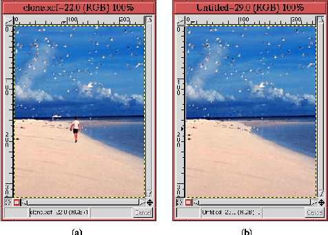

Next: 11.4
Повышение резкости Up: 11.
Ретушь и повышение Previous: 11.2.7.3
Инструмент ``Тон-Насыщенность''
Next: 11.4
Повышение резкости Up: 11.
Ретушь и повышение Previous: 11.2.7.3
Инструмент ``Тон-Насыщенность''
11.3 Удаление дефектов при
помощи инструмента ``Штамп''
Иногда изображение содержит нежелательные элементы. Телефонный столб и
провода способны погубить восхитительную композицию, изображающую
ново-английский коттедж на Кейп-Код. Однако, такого рода неприятности могут быть
просто устранены при помощи инструмента ``Штамп'', который находится на
панели инструментов. Далее показано, как использовать этот мощный инструмент.
Figure: Изображение с нежелательным
элементом
 |
На рисунке 11.29
(a) представлена уже виденная ранее идиллическая сцена - длинная пустынная
полоса пляжа, синяя вода и небо с пушистыми облаками на горизонте. Но пляж
все-таки не совсем пустынный - по кромке воды прогуливается одинокий персонаж.
Собственно, это никаких проблем не создает, разве что может быть желательно
посмотреть на пляж без единой живой души. Если да, то вы можете использовать это
изображение просто удалив нежелательного персонажа из сцены при помощи
инструмента ``Штамп''. Чтобы это сделать, начните с выбора кисти
используя диалоговое ``Выбор кисти'', как показано на рисунке 11.29
(b). Для этого примера выбрана вторая по величине круглая жесткая кисть. Выбор,
как обычно, зависит от потребностей.
Смысл использования инструмента ``Штамп'' - покрытие нежелательной части
изображения цветами фона. Откуда взять цвета фона? Собственно с самого фона.
Инструмент ``Штамп'' перерисовывает некоторую часть изображения, используя
другую часть того же изображения. Если действовать аккуратно, то ``Штамп'' можно
использовать для полного и убедительного удаления нежелательных участков.
Figure: Увеличенное изображение,
показывающее точку-источник (a) и применение (b) инструмента ``Штамп'' к
нежелательной области изображения
 |
На рисунке 11.30
(a) показано увеличенное изображение рисунка 11.29
(a). Обратите внимания на курсор в форме перекрестья на нем. Этот курсор
показывает центр области источника, т.е. той области, которая будет использована
для наложения на другие, нежелательные, части изображения. Размер и характер
области источника определяется размером и типом выбранной кисти. Выбрав на
панели инструментов ``Штамп'', вы можете задать центр области источника кликом
левой кнопки мыши при одновременно нажатой клавише Ctrl.
Теперь, при перемещении мыши с нажатой и удерживаемой левой кнопкой в другой
области изображения окружение точки-источника будет копироваться в точку
расположения курсора. Если выбор источника был сделан аккуратно, то это выглядит
как удаление переднего плана и открытие фона под ним. Эффект продемонстрирован
на рисунке 11.30
(b), где показано удаление части ноги (не беспокойтесь - процесс абсолютно
безболезненный и при подготовке этого примера никто не пострадал).
Размер охватываемой инструментом ``Штамп'' области соответствует размеру
выбранной кисти. Обратите внимание на курсор в форме перекрестья на
рисунке 11.30
(b) - он показывает расположение точки-источника при работе с инструментом
``Штамп''. Перекрестье перемещается вместе с курсором мыши всегда оставаясь на
одном и том же расстоянии, пока кнопка мыши нажата. Это способствует более
реалистичному результату, так как при перерисовывании используются различные
участки изображения.
На рисунке 11.31
показан окончательный результат применения инструмента ``Штамп''.
Figure: Оригинал и изображение с
удаленным нежелательным элементом
 |
Рисунок 11.31
(a) - первоначальный вид изображения, рисунок 11.31
(b) - нежелательный персонаж полностью уничтожен, вместе со своей тенью!
Корабль, виднеющийся на горизонте в оригинальном изображении, также удален.
Хорошие примеры практического использования инструмента ``Штамп'' приведены в
разделах 12.4
и 12.5.
Next: 11.4
Повышение резкости Up: 11.
Ретушь и повышение Previous: 11.2.7.3
Инструмент ``Тон-Насыщенность''
Grigory Bakunov 2003-05-26